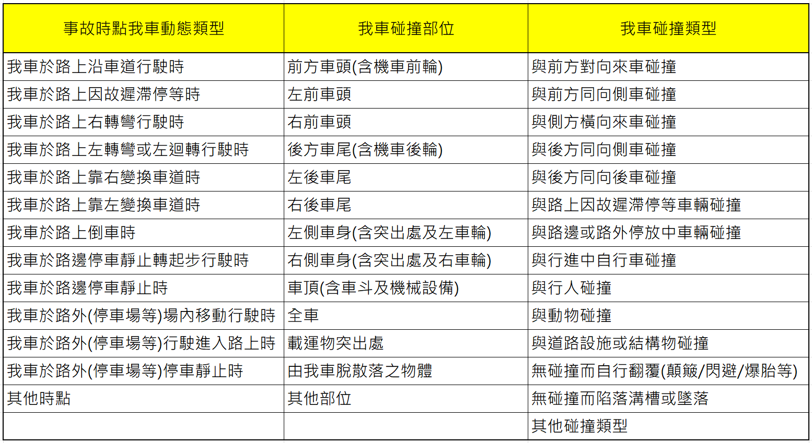
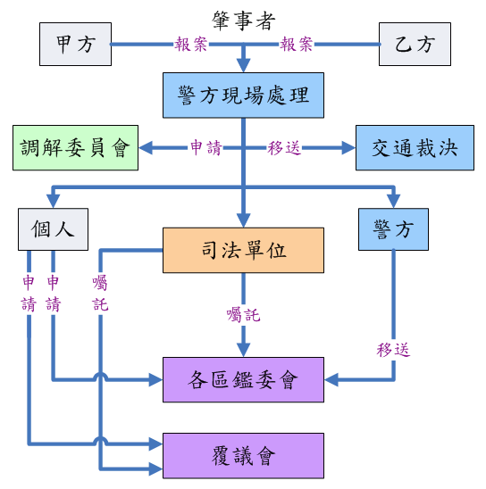
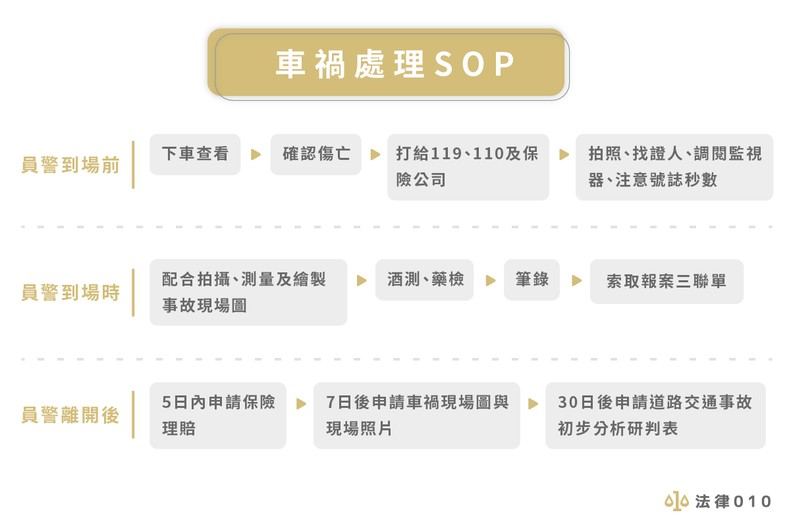
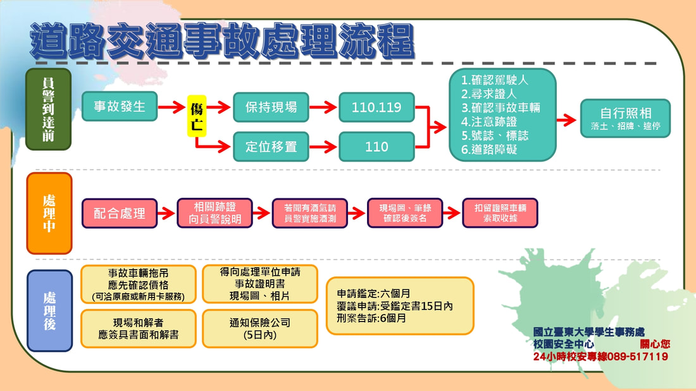
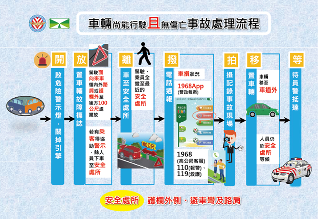
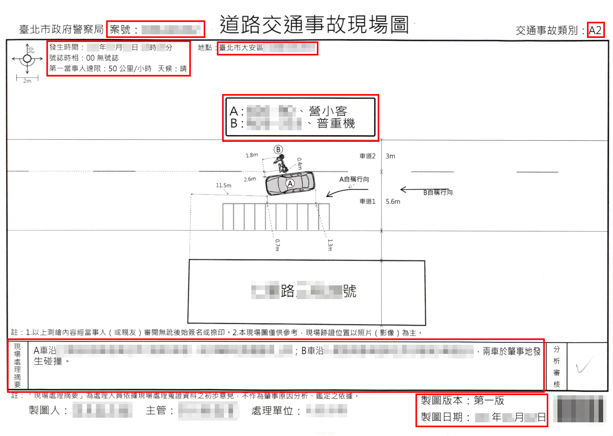
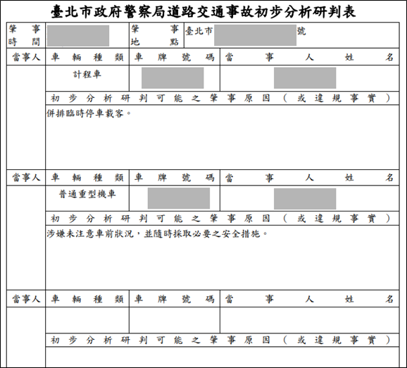

事件案例
- 媒體報導：公務車迴轉未禮讓?!駕駛撞破玻璃險甩飛
- 媒體報導：警用小電腦滑落彎腰想撿 竟衝上人行道
- 媒體報導：公車見綠燈急過 攔腰撞救護車
- 媒體報導：女警撞賓士.特斯拉 賠償金恐飆破180萬
- 媒體報導：公務車因公車禍司機被告 ○局冷淡處理
- 網路剪報：警局公務車送修途中撞傷人！北院判賠578萬
- 網路剪報：近300萬價值消防車遭追撞受創 法官認證只值28萬引譁然
相關法規
- 交通部：
- 道路交通事故處理辦法
- 車輛管理手冊第七章_肇事處理
- ※參考：交通部公路總局車輛機械肇事處理要點
- 產險公會：汽(機)車肇事責任分攤處理原則
本府公務車輛保險及事故理賠實務指引(草案)-車輛事故善後處理指引
- 事故車輛駕駛人或隨車人員依車輛管理手冊 第40點規定迅作現場處理、報告警察機關及通報機關後，機關應提醒我方現場適當人員及時拍照或攝錄雙方車損處特寫、車輛相對位置及標誌標線號誌、散落物、煞車痕等，並取得警察機關開立之「道路交通事故當事人登記聯單（屬非道路範圍事故則以受理案件登記表等文件替代）」，送交機關管理人員。機關並應通知保險業者，及立即回溯保存相關行車紀錄影像，以檢討原因及核對事故時間地點是否與出車事由相符。
- 機關應洽詢保險業者參照中華民國產物保險商業同業公會汽(機)車肇事責任分攤處理原則，評估類似事故類型各方肇責分攤比例，並協同業者追蹤警方初步分析研判進度及適時與事故他方溝通，審慎評估後續調解、和解或鑑定等事宜。
- 我方車體損失如有迅行修復繼續使用必要，經評估類似事故類型他方可能有肇責者，可諮詢保險業者與肇責他方或其保險業者儘速協商，以我方車原廠或各方可接受之合格養護廠，由機關自行出資先予修復並保留受損照片與損壞舊件，肇事他方再依最終肇責判定結果應分攤比例賠償我方，或由我方車體險出險先行修復後，由保險業者向肇事他方行使代位求償權。
- 我方事故受損車輛如有加保車體險，機關應洽詢保險業者概估出險後，後續3個年度合計保險費增加差額數(含3年內有出險年度無法調降20％部分)，及有無出險過度遭拒保疑義，綜合評估確較自行出資修復更具效益，簽報機關首長或其授權人核准後，始得通知保險業者出險。
- 他方因事故所受損失須由我方第三人責任險賠償者，為保障他方應有權益並加速和解結案，原則得由保險業者先行辦理出險理賠。惟機關應將全案和解後之實際賠償金額簽報機關首長或其授權人知悉；如實際賠償金額低於因出險導致之未來保險費預估增加總額（含年度出險致無法調降10%部分），機關並應與保險業者協調，由機關歸墊該案賠償金額予保險業者並註銷該筆出險賠款紀錄。
- 車輛事故由我方保險業者出險致後續保險費遭調漲者，機關應追蹤事故最終判定結果，如確定應由碰撞之他方全責賠付，機關應請我方保險業者退還該車保險費溢收金額，並更正賠款紀錄係數。
- 保險業者針對高風險車輛提出處置要求者，機關如仍有投保需求，應優先以提高相關保險機關自負額方式與業者協商。如保險業者仍要求增加超出本規定之保險項目或保額始同意承保，機關如仍有投保需求，應檢附相關車輛事故處理紀錄簽報本府核准後，方得辦理限期專案保險。
- 同一車輛年度內因事故多次出險，致續保時保單所記載車責或車體賠款紀錄係數逾0.3者，機關如仍有投保需求，應主動與保險業者約定提高該車相關保險機關自負額，使車責或車體續保實付保險費，分別相較其賠款紀錄係數為0時之基準費用，增加幅度不超過30％。
- 車輛肇生事故有車輛管理手冊 第42點情形者，應依規定追究有關人員行政責任。
- 機關應參考法務部廉政署所彙編公務車輛使用管理廉政指引 建立相關防治措施，以避免公務車輛肇事處理不當或衍生詐領保險理賠等風險。
相關參考資訊
- ※參考：1140917公務車事故肇責AI分析
 |
| 紀錄事故發生狀態之重點要項 |
 |
| 監理服務網-交通事故處理流程 |
 |
| 車禍處理SOP |
 |
| 東大交通安全入口網-交通事故處理流程圖 |
 |
| 國道事故避免二次事故處理原則 |
 |
| 事故現場圖範例 |
 |
| 初步分析研判表 |